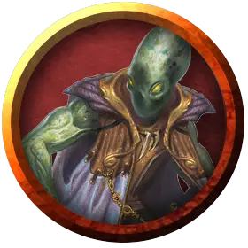

Джиджибиша Маниварши
Jijibisha Manivarshi
Среднее Исчадие (Юголот), нейтрально-злое, именной НИП

Класс Доспеха 19 (природный доспех)
Хиты 153 (18к8 + 72)
Скорость 30 футов, летая 60 футов
| мод | спас | ||
|---|---|---|---|
| СИЛ | 16 | +3 | +3 |
| ЛОВ | 16 | +3 | +3 |
| ТЕЛ | 18 | +4 | +4 |
| мод | спас | ||
|---|---|---|---|
| ИНТ | 18 | +4 | +4 |
| МДР | 15 | +2 | +2 |
| ХАР | 19 | +4 | +4 |
Навыки Восприятие +7, Запугивание +9, Скрытность +8
Сопротивление урону огонь, холод, электричество; дробящий, колющий, рубящий от немагических атак
Иммунитет к урону кислота, яд
Иммунитет к состояниям очарование, отравление, испуг
Чувства истинное зрение 120 футов, пассивное Восприятие 17
Языки Бездны, Инфернальный, Телепатия 120 фт.
Опасность 13 (10000 опыта)
Бонус мастерства +5
Особенности
Врождённое колдовство. Базовой характеристикой Джиджибиши является Харизма (Сл спасброска от заклинания 17). Он может накладывать следующие заклинания, не нуждаясь в материальных компонентах:
• 3/день каждое: огненная стена [wall of fire];
Сопротивление магии. Джиджибиша совершает с преимуществом спасброски от заклинаний и прочих магических эффектов.
Магическое оружие. Атаки оружием Джиджибиши являются магическими.
Вариант: Призыв юголотов. У некоторых юголотов может быть действие, позволяющее им призывать других юголотов.
Призыв юголота (1/день). Юголот выбирает, кого призвать, и пытается это сделать. Ультролот получает 50% шанс призыва 1к6 меззолотов [mezzoloth], 1к4 никалотов [nycaloth] или одного ультролота [ultroloth].
Призванный юголот появляется в свободном пространстве в пределах 60 футов от призывателя, действует самостоятельно (кроме случая, когда призывающим был ультролот, так как в этом случае призванный юголот действует как его союзник), и не имеет способности призывать других юголотов. Призванный юголот существует в течение 1 минуты, или пока призыватель не умрёт или бонусным действием его не отпустит.
Действия
Мультиатака. Джиджибиша может использовать Гипнотический взгляд и совершает три рукопашные атаки.
Длинный меч. Рукопашная атака оружием: +8 к попаданию, досягаемость 5 футов, одна цель. Попадание: Рубящий урон 7 (1к8 + 3), или рубящий урон 8 (1к10 + 3), если используется двумя руками.
Гипнотический взгляд. Глаза ультролота наливаются опалесцирующим светом, и он нацеливается на одно существо, которое видит в пределах 30 футов от себя. Если цель видит ультролота, она должна преуспеть в спасброске Мудрости Сл 17 от этой магии, иначе станет очарованной до конца следующего хода ультролота. Очарованная цель является ошеломленной. Если спасбросок был успешным, цель получает иммунитет к взгляду этого ультролота на следующие 24 часа.
Телепортация. Ультролот магическим образом телепортируется вместе со всем несомым и носимым снаряжением, на расстояние до 60 футов в свободное пространство, которое он видит.
Описание
Джиджибиша Маниварши, порочная душа из прошлого земли, скрывающаяся в близлежащем лесу. Давным-давно она заключила сделку со злыми потусторонними силами, которые дали ей долголетие и способности исчадия, сделка, которая в конечном итоге привела к гибели Маниварши.
Несмотря на ее способности исчадия, она выглядит как древний, иссохший человек.